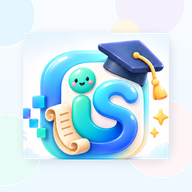

Anda sedang luar talian
Sambungkan semula internet untuk log masuk dan menyegerakkan data pentaksiran.
Cuba semulaData Diperkasa. • Pentaksiran Dipermudah. • Kecemerlangan Dipacu

Sambungkan semula internet untuk log masuk dan menyegerakkan data pentaksiran.
Cuba semulaData Diperkasa. • Pentaksiran Dipermudah. • Kecemerlangan Dipacu